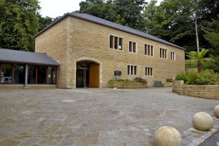

The internal work necessary to turn Towneley Hall into an Art Gallery and Museum began in January 1903 with central heating being installed. A heating plan, drawn up in August 1902, provides details of all the rooms as they were before the Corporation began to make changes.
1903
The ceiling on the upper floor of the south wing was restored and lowered to provide improved lighting and the entrance was labelled Long Gallery. The bedrooms were labelled rooms III to VI. Previously Bedroom VI was two rooms (rooms 37 and 38), named in the inventory of 1871 as the Chintz Room and the Chintz Dressing Room. The partition between the two rooms was removed but the two doorways remained. A gate was fixed at foot of the cantilever staircase and the staircase balustrades and landing were strengthened.
1905
In April the lath and plaster partition (room 22) adjoining the chapel was removed and also that between the two sitting rooms (rooms 24 and 25) adjoining the Dining Room. This room was first named the North Room and then the Old Burnley Room. In August a small iron gate was fixed at the bottom of the staircase near the entrance to the chapel.
1907
In the autumn, work began on the adaption of the upper rooms of the north wing as a picture gallery (rooms 42-46 and 52-54). Radiators for heating the new picture gallery were fixed in the centre of the gallery. The art gallery was completed by the end of March 1908.
1922
In the autumn, work began on the adaption of the remaining upper rooms (rooms 47 and 49-51) of the north wing as another gallery. It was opened in April 1923 as the Edward Stocks Massey Gallery for display of watercolour paintings.
1924
In the autumn, work began on making a doorway from Room 9 (Housekeeper's Room) to Room 10 (Servants Hall) and making Room 10 ready for exhibition purposes and making a doorway through to Room 11 (now the Collectors room).
1929 - old servants' wing removed
In 1902 the servants' building on the north-west side of the hall was used by the Parks Department to house the gardener and forester. By the time the first parks gardener retired in the 1920s the building was in such a poor state of repair that no one else would take on a job that required they lived there. As a result the building was taken down and new cottages were built nearby using the old stone. The demolition required replacing part of a brick wall in the hall itself, previously internal, with appropriate stonework. In addition, a new doorway was opened to enable large pictures to be unloaded into the passage (room 14).
It was proposed to lay an electricity main from Todmorden Road to provide a service for the new Cottages and Towneley Hall. In 1933 an electrical system of fire detection and alarm was installed but lighting was not fully installed throughout the building until 1973.
2002The New Wing is the building on the north west side of Towneley Hall, fitting exactly in the footprint of a 19th century servants' wing that was was demolished in 1929. Opened in 2002 with the help of a grant from Heritage Lottery Fund, it contains the museum shop, toilets, lecture theatre, offices and library. It was built with the help of a grant from Heritage Lottery Fund. The grant required improved access to the museum with a lift being installed up to the second floor of the north wing with another small lift for wheelchair access avoiding a flight of stairs from outside the Kitchen going up to the Great Hall.
Whilst the outside of the North wing was essentially unchanged by the addition of the new wing, there was a change to the Victorian tower that was carried out at the same time. This was the addition of an emergency exit door, close to where the lift has been added to take visitors up to the art galleries.